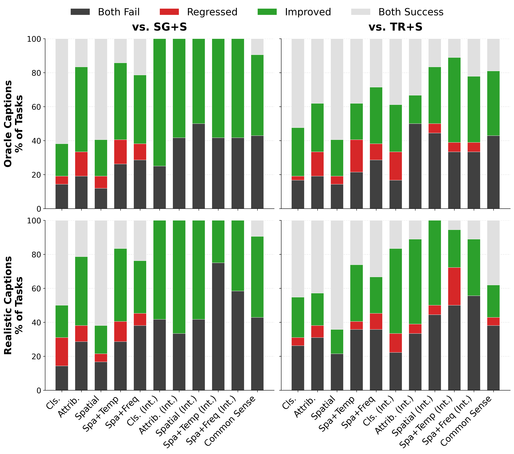
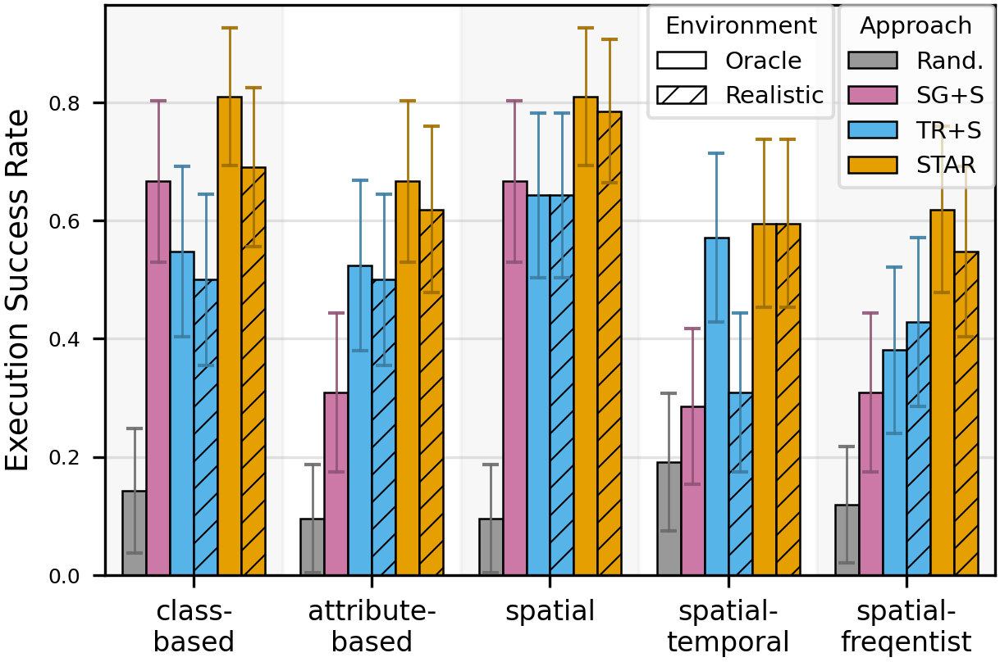
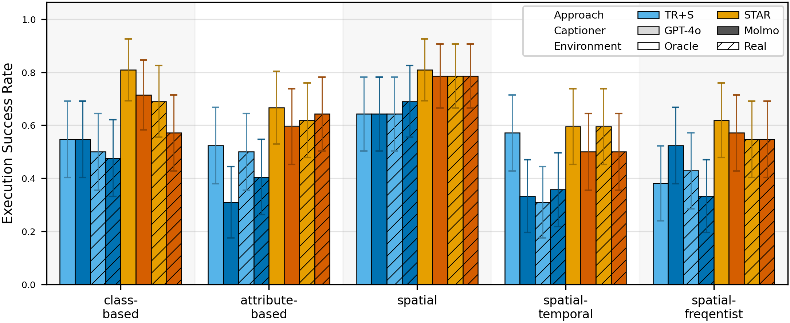

Abstract
Service robots must retrieve objects in dynamic, open-world settings where requests may reference attributes (“the red mug”), spatial context (“the mug on the table”), or past states (“the mug that was here yesterday”). Existing approaches capture only parts of this problem: scene graphs capture spatial relations but ignore temporal grounding, temporal reasoning methods model dynamics but do not support embodied interaction, and dynamic scene graphs handle both but remain closed-world with fixed vocabularies. We present STAR (SpatioTemporal Active Retrieval), a framework that unifies memory queries and embodied actions within a single decision loop. STAR leverages non-parametric long-term memory and a working memory to support efficient recall, and uses a vision-language model to select either temporal or spatial actions at each step. We introduce STARBench, a benchmark of spatiotemporal object search tasks across simulated and real environments. Experiments in STARBench and on a Tiago robot show that STAR consistently outperforms scene-graph and memory-only baselines, demonstrating the benefits of treating search in time and search in space as a unified problem
STAR Overview
STAR in Real World
Three real-world examples of STAR in action — click arrows to explore.
Unmute videos for more information.
STAR on STARBench
STAR achieves the highest success rates across all task families — visible, interactive, and commonsense object search — demonstrating the benefit of unifying search in time and search in space.
More results and ablations are in the paper.
We perform a paired analysis to track how STAR alters the outcome of tasks compared to baseline methods. Green bars highlight episodes where the baseline failed but STAR succeeded, while Red bars indicate regressions. Overall, STAR fixes failures without breaking successes.

Visible Object Search in Simulation

STAR outperforms scene-graph and memory-only baselines on all spatio-temporal object retrieval tasks.

To test the sensitivity of performance to the choice of captioners, we evaluate STAR with different captioning models: 1) GPT-4o (commercial API, light shade) and 2) Molmo-7B (open-source, dark shade). Overall, STAR is robust to the noise in the long-term memory captioning step.
Example Performance Difference of STAR: GPT-4o vs. Molmo + Realistic Captions
| Task Category | Success Rate Gap (STAR w/ GPT-4o vs. Molmo Cap.) |
P-Value (McNemar's) |
Interpretation |
|---|---|---|---|
| Class-based | ≈ 8% | 0.13 | Better performance with GPT-4o captions |
| Attribute-based | ≈ 2% | 0.85 | Statistically Equivalent |
| Spatial | < 1% | 0.84 | Statistically Equivalent |
| Spatial-Temporal | ≈ 5% | 0.38 | Comparable (No Sig. Difference) |
| Frequency | < 1% | 0.86 | Statistically Equivalent |
BibTeX
@misc{chen2025searchingspacetimeunified,
title={Searching in Space and Time: Unified Memory-Action Loops for Open-World Object Retrieval},
author={Taijing Chen and Sateesh Kumar and Junhong Xu and Georgios Pavlakos and Joydeep Biswas and Roberto Martín-Martín},
year={2025},
eprint={2511.14004},
archivePrefix={arXiv},
primaryClass={cs.RO},
url={https://arxiv.org/abs/2511.14004},
}